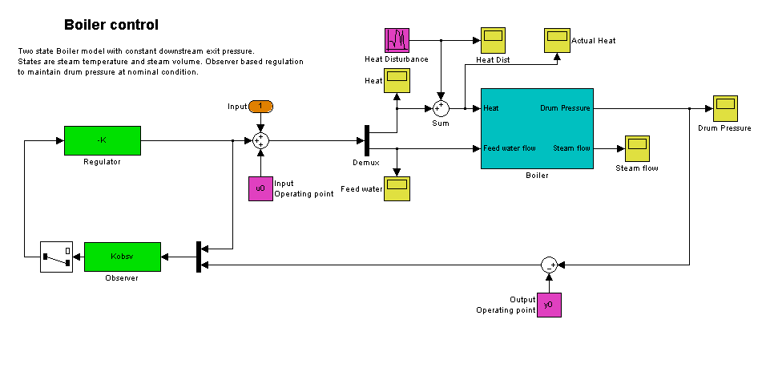
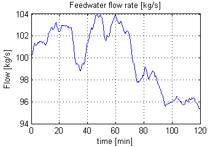
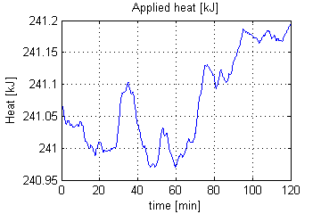
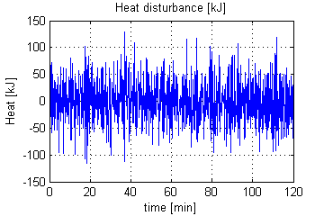
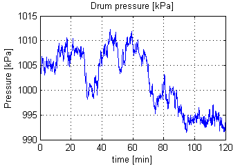

This demonstration shows the use of the operating point search function, model linearization, and subsequent state observer and LQR design.
In this drum-boiler model the control problem is to regulate the boiler pressure in the face of random heat fluctuations from the furnace by adjusting the feedwater flow rate and the nominal heat applied. For this example 95% of the random heat fluctuations are less than 50% of the nominal heating value. This is not unusual for a furnace fired boiler.
To begin, open the Simulink model.
Boiler_Demo
The model's pre-load function initializes the controller sizes. This is necessary because to compute the operating point and linear model, the Simulink model must be executable. Note that u0, y0 are set after the operating point computation and are thus initially set to zero. The observer and regulator are computed during the controller design step and are initially also set to zero.
The model initial state values are defined in the Simulink model. Using these state values find the steady state operating point using the findop command.
First create an operating point specification where the state values are known.
opspec = operspec('Boiler_Demo'); for loop = 1:size(opspec.States,1) opspec.States(loop).Known = 1; end
Now adjust the operating point specification to indicate that the inputs must be computed and that they are lower bounded.
opspec.Inputs(1).Known = [0;0]; %Inputs unknown opspec.Inputs(1).Min = [0;0]; %Input minimum value
Finally add an output specification to the operating point specification; this is necessary to ensure that the output operating point is computed during the solution process.
opspec = addoutputspec(opspec,'Boiler_Demo/Boiler',1); opspec.Outputs(1).Known = 0; %Outputs unknown opspec.Outputs(1).Min = 0; %Output minimum value
Compute the operating point and generate a report.
[opSS,opReport] = findop('Boiler_Demo',opspec);
Operating Point Search Report:
---------------------------------
Operating Point Search Report for the Model Boiler_Demo.
(Time-Varying Components Evaluated at time t=0)
Operating point specifications were successully met.
States:
----------
(1.) Boiler_Demo/Boiler/Steam volume
x: 5.6 dx: 7.77e-014 (0)
(2.) Boiler_Demo/Boiler/Temperature
x: 180 dx: 1.69e-013 (0)
(3.) Boiler_Demo/Observer/Internal
x: 0 dx: 0 (0)
x: 2.33e-021 dx: 2.33e-021 (0)
Inputs:
-----------
(1.) Boiler_Demo/Input
u: 2.41e+005 [0 Inf]
u: 100 [0 Inf]
Outputs:
-----------
(1.) Boiler_Demo/Boiler
y: 1e+003 [0 Inf]
Before linearizing the model around this point, specify the input and output signals for the linear model.
First specify the input points for linearization.
Boiler_io(1)=linio('Boiler_Demo/Sum',1,'in'); Boiler_io(2)=linio('Boiler_Demo/Demux',2,'in');
Now specify the open loop output points for linearization.
Boiler_io(3)=linio('Boiler_Demo/Boiler',1,'out','on'); setlinio('Boiler_Demo',Boiler_io);
Find a linear model around the chosen operating point.
Lin_Boiler = linearize('Boiler_Demo',opSS,Boiler_io);
Finally, using the minreal command, make sure that the model is a minimum realization, e.g., there are no pole zero cancelations
Lin_Boiler = minreal(Lin_Boiler);
1 state removed.
Using this linear model, design an LQR regulator and Kalman filter state observer. First find the controller offsets to make sure that the controller is operating around the chosen linearization point by retrieving the computed operating point.
u0 = opReport.Inputs.u; y0 = opReport.Outputs.y;
Now design the regulator using the lqry command. Note that tight regulation of the output is required while input variation should be limited.
Q = diag(1e8); %Output regulation R = diag([1e2,1e6]); %Input limitation [K,S,E] = lqry(Lin_Boiler,Q,R);
Design the Kalman state observer using the kalman command. Note that for this example the main noise source is process noise and it enters the system only through one input, hence the form of G and H.
[A,B,C,D] = ssdata(Lin_Boiler); G = [B(:,1)]; H = [0]; QN = 1e4; RN = 1e-1; NN = 0; [Kobsv,L,P] = Kalman(ss(A,[B G],C,[D H]),QN,RN);
For the designed controller the process inputs and outputs are shown below.
The feedwater actuation signal in kg/s:
The heat actuation signal in kJ:
The next figure shows the heat disturbance in kJ. Note that the disturbance varies by as much as 50% of the nominal heat value.
The figure below shows the corresponding drum pressure in kPa. Notice how the pressure varies by about 1% of the nominal value even though the disturbance is relatively large.
